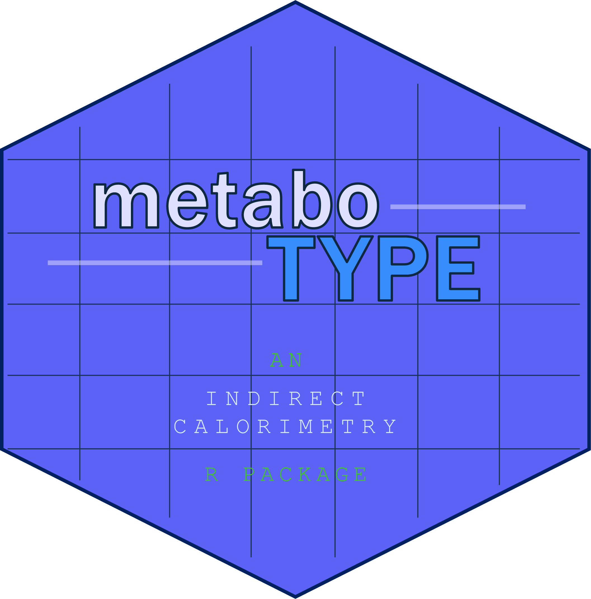

Select photoperiod (light/dark cycle) for your time aligned dataframe
Source:R/align_to_photoperiod.R
align_to_photoperiod.RdSelect photoperiod (light/dark cycle) for your time aligned dataframe
Usage
align_to_photoperiod(
dataset,
subject_var,
datetime_var,
lights_on = "07:00:00",
lights_off = "19:00:00",
cycle_length = 24,
timezone = "America/Chicago"
)Examples
if (FALSE) { # \dontrun{
# Using defaults
photoperiod_data1 <- align_to_photoperiod(dataset = data1, subject_var = Animal,
datetime_var = Date)
# Overriding defaults
photoperiod_data1 <- align_to_photoperiod(dataset = data1, subject_var = Animal,
datetime_var = Date, lights_on = "06:00:00", lights_off = "18:00:00")
} # }